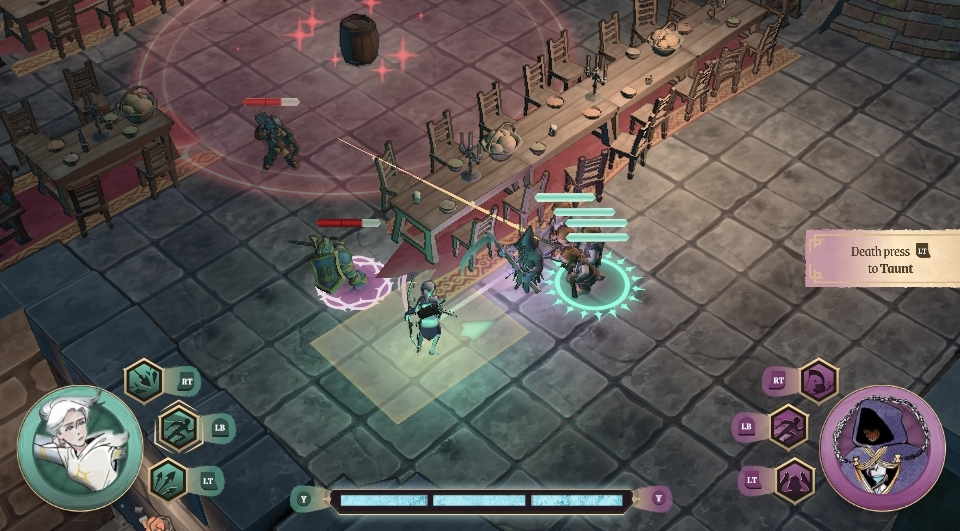
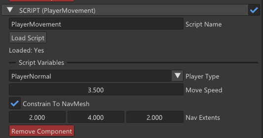

01 / GAMEPLAY
01 / GAMEPLAYMASTER’S TEAM PROJECT · 2025–2026
Bound by Death ↗
Asymmetric co-op, shared combat.
Ranged attacks, pooled projectiles, directional targeting and miniboss attacks, built in a custom C++ engine.
See my contributions →Jordi Pi Moreno · Barcelona, Spain
SELECTED WORK / 2025—2026
I build combat systems in C++ and the engine tools that help a team turn ideas into playable games.

Explore the project ↗Cooperative combat.
From gameplay code to editor workflows.
01 / Selected work
A closer look at the systems I built,
the decisions behind them, and my role.
01 / GAMEPLAYMASTER’S TEAM PROJECT · 2025–2026
Asymmetric co-op, shared combat.
Ranged attacks, pooled projectiles, directional targeting and miniboss attacks, built in a custom C++ engine.
See my contributions →02 / ENGINE & TOOLS
A C++ scripting pipeline, Inspector integration, script hot reloading, triggers and viewport picking for the BoundByDeath team.
Explore the engine work →
 ▶ WATCH GAMEPLAY
▶ WATCH GAMEPLAY03 / BACHELOR’S THESIS · 2025
A strategy game and a custom C++ engine, developed together to explore reusable game systems.
 ▶ WATCH TRAILER
▶ WATCH TRAILER04 / UNIVERSITY TEAM PROJECT · 2025
A playable 3D tower defense game. My work covered defenses, camera controls and the enemy wave director.
Earlier work
02 / About
I’m Jordi, a gameplay and tools programmer based in Barcelona. I enjoy the point where a game mechanic becomes a reusable system.
My work spans C++ gameplay, custom engine development and Unity. On BoundByDeath, I moved between combat features, editor tools and coordinating the gameplay programming team.
Before programming games, I played League of Legends professionally. Years of practice, match analysis and team competition shaped how I give feedback, work through problems and support teammates.
Download my CV ↓C++ · C#
Custom Engine · Unity
DirectX · OpenGL
Git · Visual Studio
Figma · Notion · Jira
Code review · Planning
03 / Experience & education
AUG 2026 — PRESENT
Earlier internship: JUL–NOV 2024
Games Assistant · Operations
Coordinate game release information and materials, maintain game records, test games and report issues, and handle requests across departments.
2017 — 2023
Training and tournament competition, match analysis and strategic feedback, with leadership responsibilities within the team.
2025 — 2026
Universitat Politècnica de Catalunya
2025
Minor in Video Games · La Salle Campus Barcelona, Universitat Ramon Llull
04 / Get in touch
Barcelona, Spain
Connect on LinkedIn ↗